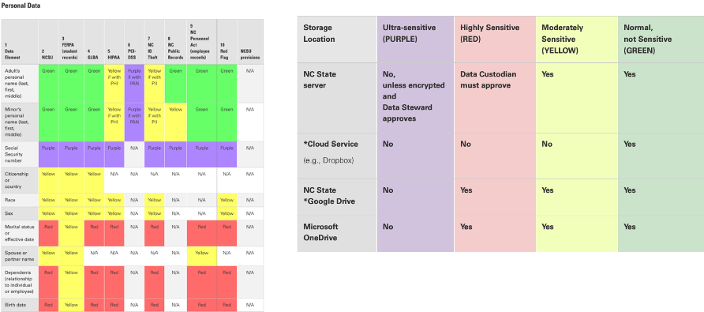
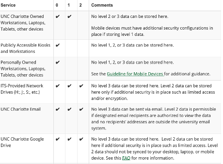

Cybersecurity In K-12 Schools
Mark Samberg, Ed.D.
October 28, 2020
Overview
- Highlight major threats to K-12
-
Discussions of Mitigation Factors
- Good Best Practices
- Network segmentation
- Datacenter configuration
- Privilege Separation
- User-facing policies, password policies and 2FA
- Data governance
- Overview – Shodan Vulnerability Scanner
Major Threats in K-12
-
Internal Actors
- Mistakes
- BYOD issues
- Oversharing
-
External Actors
- Phishing and Social Engineering
- Hacking
- Ransomware and malware
- Theft
- Vulnerabilities
Good Best Practices
- Monitor physical access to school buildings
- Monitor and log access to network equipment including data closets
- Use managed services where possible
-
Transition from SMB-based storage to cloud-based storage
- And disable SMB everywhere you can
- Minimize discoverability.
- Train often
- Isolate first, diagnose second
- Have a plan
Network Segmentation
- Prevent devices from talking to each other on the network
- Use VLANs to segment networks by device type
- Use MAC Filtering to limit rogue devices
-
Prevent Wi-Fi/student and teacher devices from seeing
-
Use encrypted Wi-Fi networks with RADIUS authentication
- Unencrypted guest networks should not have internal access
Data Center Configuration
- Use a firewall between network services and the rest of your network, even internally
- Open only ports that need to be open to the outside network
- Allow database access only to web server process by IP address
- Use virtual servers to limit the number of apps sharing a server
- Use reverse proxying or load balancers to sit between users and web servers
Data Center Configuration
- Limit firewall ports from the outside, use VPNs whenever possible
- Audit firewall ports routinely
- Keep servers patched
- Use a log monitoring service
- Back up routinely, keep a recent backup cold and off-site at all times
Privilege Separation
- Use separate accounts for privileged actions
- Keep workstation and domain admin accounts separate
Key Rotation
- Use Microsoft LAPS to secure local administrator passwords
-
Use key-based authentication for Linux servers and disable password authentication
- Rotate keys at least yearly
- Ideally use a key per server
- Use one key per user per machin
User-Facing Policies
- Encrypt local storage on end-user devices
- Require yearly password changes
- Train users on phishing and social engineering attacks
- Have a robust BYOD policy
- Use VPN for off-site applications
- Use antivirus and anti-malware services on devices
- Require 2FA for all users with access to privileged data
Data Governance
NC State Data Security Matrix

Data Governance
NC State Data Security Matrix

Data Governance
Considerations
- Who can collect/see what…
- Cloud storage vs. SMB storage
- Controlling accidental release
- Sharepoint/Team Drives vs. Folder
- Local storage
- USB storage
- BYOD access
Shodan Vulnerability Scanner
What is it?
- Scans the entire Internet routinely
- Queries IP addresses to find open ports and CVEs
- Publicly accessible
Shodan Vulnerability Scanner
What to do about it?
- Close all unnecessary ports
- Patch operating systems, firewalls, and applications
- Review CVEs to determine if they impact you